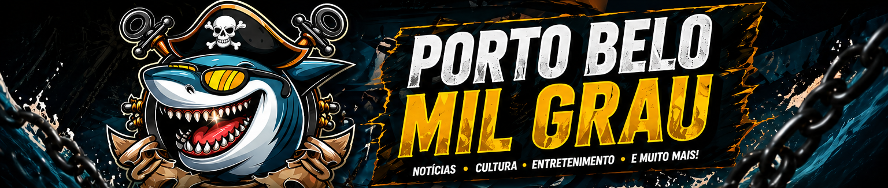

Praias
Tempo firme favorece movimento no litoral
Comerciantes esperam bom fluxo nos proximos dias.
Turismo
Praias, passeios, temporada, gastronomia e experiencias para quem vive ou visita Porto Belo.
Praias
Comerciantes esperam bom fluxo nos proximos dias.

Roteiro
Uma selecao de pontos para visitar, comer e fotografar.

Evento
Programacao local ganha reforco com esporte e lazer.
Mar
Visitantes buscam roteiros curtos e paisagens abertas.
Acesso
Horarios de pico devem concentrar maior movimento.

Guia local
Espaco especial para atracoes, restaurantes e servicos.
Experiencia
Visitantes buscam pontos abertos para registrar a cidade.
Usamos dados basicos de navegacao para melhorar sua experiencia. Ao continuar, voce concorda com nossa politica de privacidade.